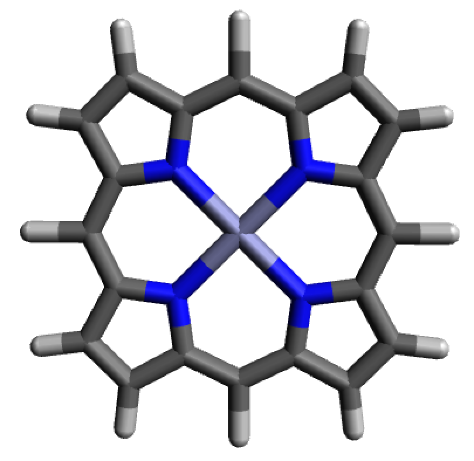
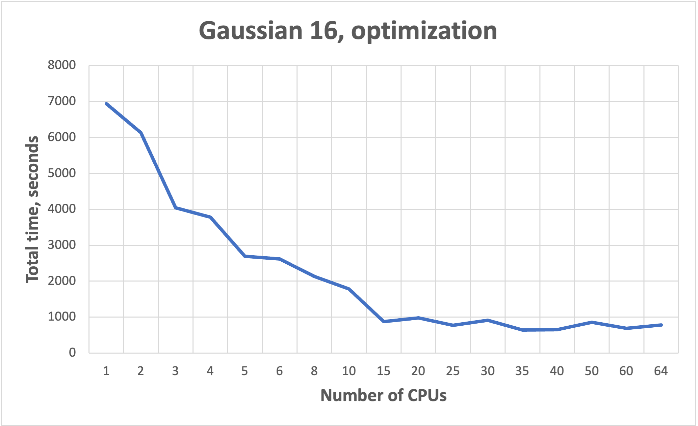
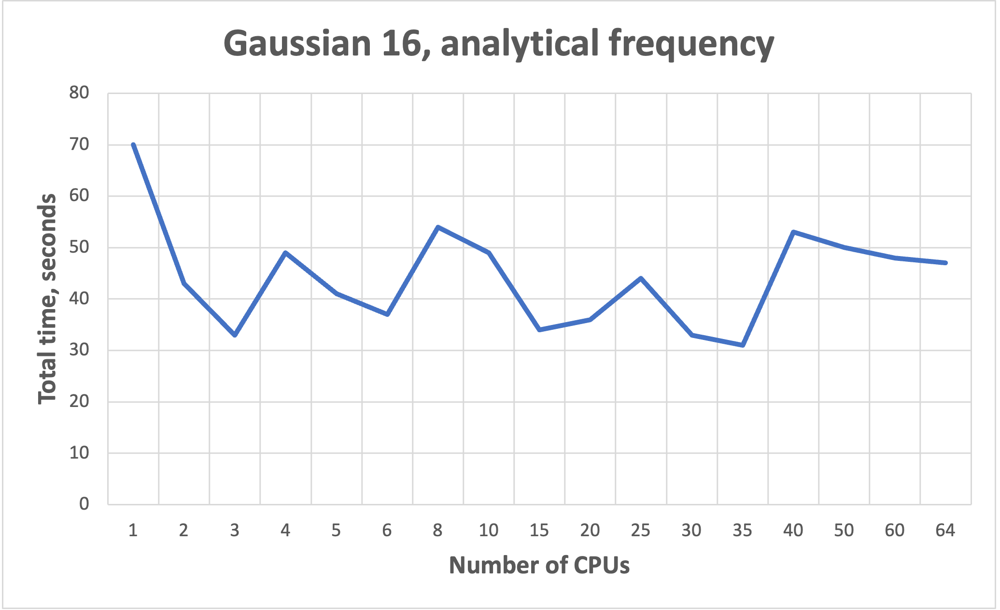
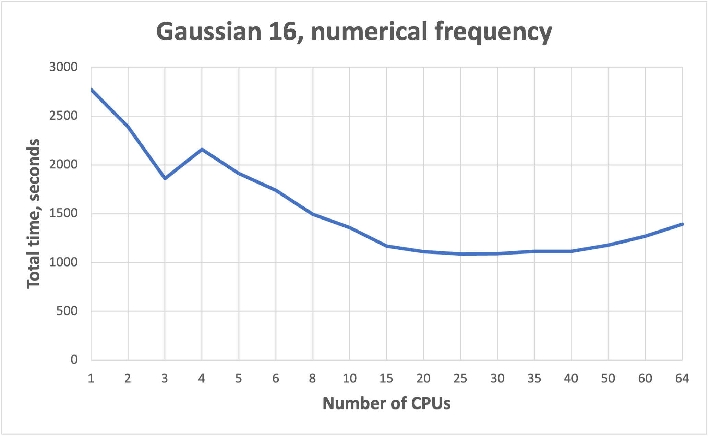

Gaussian
Important note:
To run Gaussian, user should be added to the Gaussian group.
Contact to hpcsupport@taltech.ee.
Gaussian short introduction
Make gaussian.slurm batch script:
#!/bin/bash #SBATCH --job-name=Job_Name #SBATCH --mem-per-cpu=2GB #SBATCH --nodes=1 #SBATCH --ntasks=1 #SBATCH --cpus-per-task=24 #SBATCH -t 1-00:00:00 #SBATCH --partition=common #SBATCH --no-requeue module load rocky8/all module load gaussian/16.c02 SCRATCH=/state/partition1/$SLURM_JOB_ID export GAUSS_SCRDIR=$SCRATCH mkdir -p $SCRATCH g16 -m=48gb -p=24 < job.com > job.log #Clean after yourself rm -rf $SCRATCH
Copy job-input file job.com.
Submit the job on base:
sbatch gaussian.slurm
NB! More cores does not mean faster!!! See benchmarks.
Check results using visualization software.
Gaussian long version
Gaussian is a general purpose package for calculation of electronic structures. It can calculate properties of molecules (structures, energies, spectroscopic and thermochemical properties, atomic charges, electron affinities, electrostatic potentials, electron densities etc.) as well as reactions properties (such as reaction pathways, IRC) using different methods (such as Molecular mechanics, Semi-empirical methods, Hartree-Fock, Density functional theory, Møller-Plesset perturbation theory, coupled cluster). More about Gaussian features can be found here.
Environment
There are several versions of Gaussian available at HPC: g09 (revision C.01) and g16 (revision B.01, C.01 and C.02). Environment and Gaussian version are set up by the commands:
module load rocky8/all
module load gaussian/16.c02
Running Gaussian jobs
Gaussian input files are executed by the commands g09 or g16 depending on the version of Gaussian used. This command is usually placed in slurm script.
g16 < job.com > job.log
Single core calculations
Gaussian by default executes jobs on only a single processor.
NB! If more processors are defined in slurm script, they will be reserved but not used.
Parallel jobs
To run multiple processors/cores job a number of cores should be specified. The number of cores can be defined via the -p flag (e.g. -p=4) in command line of slurm script or by adding the %NprocShared keyword into Gaussian input file (e.g. %NprocShared=4). For more information see Gaussian manual. The number of processors requested should correspond to the number of processors requested in slurm script.
NB! More cores does not mean faster!!! See benchmarks.
Example of slurm script:
#!/bin/bash
#SBATCH --job-name=Job_Name # Job name
#SBATCH --mem=8GB # Memory
#SBATCH --nodes=1 # Number of nodes
#SBATCH --ntasks=1 # Number of threads
#SBATCH --cpus-per-task=4
#SBATCH -t 1-00:00:00 # Time
#SBATCH --partition=common # Partition
#SBATCH --no-requeue # Job will not be restarted by default
module load rocky8/all
module load gaussian/16.c02
SCRATCH=/state/partition1/$SLURM_JOB_ID
export GAUSS_SCRDIR=$SCRATCH
mkdir -p $SCRATCH
g16 < job.com > job.log
rm -rf $SCRATCH
Example of Gaussian input:
%Mem=8GB
%NprocShared=4
%chk=job.chk
#P B3LYP/6-311++G** Opt EmpiricalDispersion=GD3BJ
Job_Name
0,1
C 0.67650 0.42710 0.00022
H 0.75477 1.52537 0.00197
O 1.62208 -0.30498 -0.00037
S -1.01309 -0.16870 0.00021
H -1.58104 1.05112 -0.00371
Memory
The default dynamic memory requested by Gaussian is frequently too small for successful job termination. Herein, if amount of memory requested is insufficient, the job will crash. There is no golden rule for memory requests. Usually, for common calculations (e.g. optimization, frequency etc.) 2 GB per 1 core is sufficient. This can be done by the -m flag in the command line (e.g. -m=48gb) or by adding the %Mem keyword in Gaussian input file (e.g. %Mem=2GB). For more information see Gaussian manual and taltech user-guides.
However, there are calculations that require more memory (e.g TD-DFT, large SCF calculations, etc.). Data from a slurm-JOBID.stat file can be useful to determine the amount of memory required for a computation. In slurm-JOBID.stat file the efficiency of memory utilization is shown.
Bad example:
Memory Utilized: 3.08 GB
Memory Efficiency: 11.83% of 26.00 GB
Good example:
Memory Utilized: 63.12 GB
Memory Efficiency: 98.62% of 64.00 GB
Time
Time limits depend on time partition used. If calculation time exceeds the time limit requested in the slurm script, the job will be killed, and in the end of slurm-JOBID.out will be written “error: *** JOB 317255 ON green23 CANCELLED AT 2023-08-11T22:28:01 DUE TO TIME LIMIT *** “
Therefore, it is recommended to request more time than is usually needed for calculation and create checkpoint files (by %chk=job.chk line in input file) that allows to restart job.
Using GPUs
GPUs are effective for large molecules, their energies, gradients and frequencies calculations. GPUs are not effective for small jobs, as well as for MP2 or CCSD calculations.
GPU jobs can be run only on amp or amp2. To access amp user has to have ssh-keys copied to the base (how to do that).
amp can be accessed by command:
ssh -J uni-ID@base.hpc.taltech.ee uni-ID@amp
Each GPU must be controlled by a specific CPU, wherein, CPUs used as GPU controllers do not participate as compute nodes during the calculations.
The GPUs and CPUS used for calculations are specified with the %GPUCPU command, where gpu- and cpu-lists are a comma-separated lists, possibly including numerical ranges (e.g., 0-4,6). The corresponding items in the two lists are the GPU and its controlling CPU.
%cpu=0-9
%gpucpu=0-1=0-1
NB! The controlling CPUs are included in %CPU command.
NB! The GPU and CPU count starts from zero.
Example of gaussian-gpu.slurm script for amp:
#!/bin/bash
#SBATCH --job-name=Job_Name
#SBATCH -t 1:00:00
#SBATCH --no-requeue
#SBATCH --partition=gpu # Partition
#SBATCH --gres=gpu:A100:2 # 2 GPU are reserved
#SBATCH --nodes=1
#SBATCH --ntasks=1
#SBATCH --cpus-per-task=10 # 10 CPU are reserved
#SBATCH --mem=160GB # Memory
module use /gpfs/mariana/modules/system
module load amp/all
module load Gaussian/16.c02
SCRATCH=/state/partition1/$SLURM_JOB_ID
export GAUSS_SCRDIR=$SCRATCH
mkdir -p $SCRATCH
g16 job.com > job.log
#Clean after yourself
rm -rf $SCRATCH
Example of Gaussian input job-gpu.com (bad example, since molecule is small):
%mem=160GB
%cpu=0-9
%gpucpu=0-1=0-1
# wb97xd/cc-pVDZ opt
GPU test
0 1
N 0.15134980 0.09540020 1.45819090
C 0.75130720 -1.21343470 1.83361500
H -0.39763650 0.48328420 2.23924210
H 0.89227330 0.78663430 1.26643050
C 2.08354180 -1.05427080 2.58684570
H 2.46028270 -2.07052410 2.83958100
H 1.89047670 -0.54642730 3.56027240
H 0.94017970 -1.74157910 0.87502690
C -0.27659390 -2.02386680 2.62322330
H -1.22744720 -2.09807790 2.06259160
H 0.09671630 -3.04868580 2.81503150
H -0.48448270 -1.55043170 3.60777900
C 3.18448030 -0.29819020 1.82025510
C 4.47118690 -0.16399430 2.65811660
C 3.50345720 -0.94054930 0.45675520
H 2.82725210 0.74302520 1.61940860
C 5.57163930 0.60375030 1.90697440
H 4.83763400 -1.18683360 2.90651280
H 4.24528280 0.32880900 3.62913610
C 4.59840130 -0.17643230 -0.29951390
H 3.82853470 -1.99290760 0.62773340
H 2.59267050 -0.99453480 -0.16920790
C 5.87589210 -0.03780040 0.54257470
H 6.49233690 0.65984540 2.52562860
H 5.23630520 1.65412070 1.74873850
H 4.81114970 -0.67947290 -1.26682010
H 4.21177720 0.83532620 -0.55856640
H 6.64325110 0.55322730 -0.00130230
H 6.31606730 -1.04822960 0.70571860
Allocation of memory
Allocating sufficient amounts of memory for GPU jobs is even more important when for CPU jobs. GPUs can have up to 40GB (amp1) and 80GB (amp2) of memory, wherein, must be at least an equal amount of memory given to the GPU and each control CPU thread from available 1 TB of RAM.
Gaussian gives equal shares of memory to each thread, this means that the total memory allocated should be the number of threads times the memory required.
Restarting a failed/interrupted calculation
Killed or failed jobs can be restarted, but for this checkpoint file should be generated via a %Chk command within the Gaussian input file. For more information see Gaussian FAQ, Gaussian restart and Using Gaussian Checkpoint Files.
NB! Checkpoint files are very heavy and are readable only on the machine on which they were generated. After successful completion of the calculation, it is recommended to delete these files.
How to cite:
Gaussian 16 - https://gaussian.com/citation/
Gaussian 09 - Gaussian 09, Revision C.01, Frisch, M.J.; Trucks, G.W.; Schlegel, H.B.; Scuseria, G.E.; Robb, M.A.; Cheeseman, J.R.; Scalmani, G.; Barone, V.; Mennucci, B.; Petersson, G.A.; Nakatsuji, H.; Caricato, M.; Li, X.; Hratchian, H.P.; Izmaylov, A.F.; Bloino, J.; Zheng, G.; Sonnenberg, J.L.; Hada, M.; Ehara, M.; Toyota, K.; Fukuda, R.; Hasegawa, J.; Ishida, M.; Nakajima, T.; Honda, Y.; Kitao, O.; Nakai, H.; Vreven, T.; Montgomery, J.A., Jr.; Peralta, J.E.; Ogliaro, F.; Bearpark, M.; Heyd, J.J.; Brothers, E.; Kudin, K.N.; Staroverov, V.N.; Kobayashi, R.; Normand, J.; Raghavachari, K.; Rendell, A.; Burant, J.C.; Iyengar, S.S.; Tomasi, J.; Cossi, M.; Rega, N.; Millam, N.J.; Klene, M.; Knox, J.E.; Cross, J.B.; Bakken, V.; Adamo, C.; Jaramillo, J.; Gomperts, R.; Stratmann, R.E.; Yazyev, O.; Austin, A. J.; Cammi, R.; Pomelli, C.; Ochterski, J. W.; Martin, R.L.; Morokuma, K.; Zakrzewski, V.G.; Voth, G.A.; Salvador, P.; Dannenberg, J.J.; Dapprich, S.; Daniels, A.D.; Farkas, Ö.; Foresman, J.B.; Ortiz, J.V.; Cioslowski, J.; Fox, D.J. Gaussian, Inc., Wallingford CT, 2009.
Benchmarks for parallel jobs
Gaussian example benchmarks performed with Gaussian 16 C01.
The job had 37 atoms.



